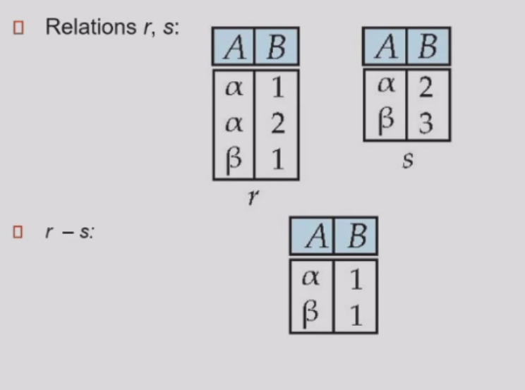
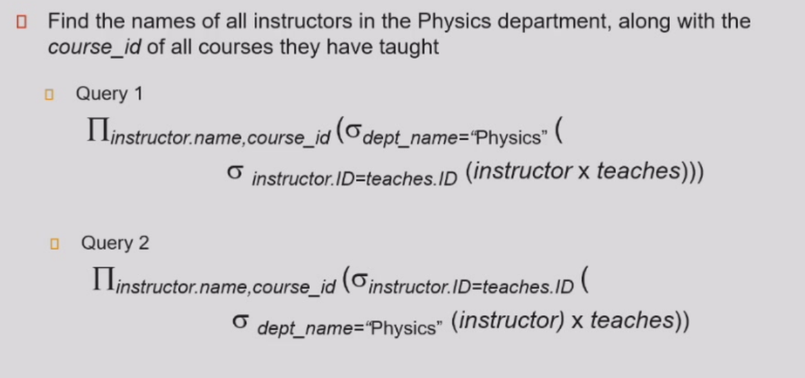
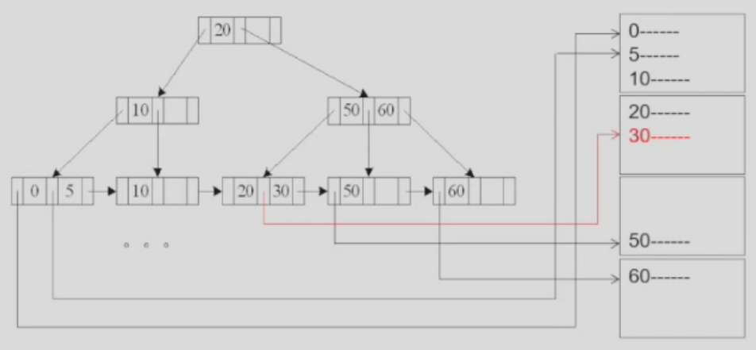

数据库系统¶
孙建伶班的笔记
Chap 1 Introduction¶
1.2 Definition¶
[Definition] Database:a collection of interrelated/integrated and persistent data
[Definition] Database Management System(DBMS):A set of programs used to access,update and manage the database
Properties of DBMS:
- efficiency and scalability(可扩展性)
- independency(physical/logical)
- integrity(完整性) and security
- concurrent(并发) access and robustness(鲁棒性)(recovery)
1.4 Levels of data abstraction¶
- Physical level:files
- Logical level:relationship
- View level:details of data viewed by the users(detail hidden) e.g. age for course selection

schemas(模式) and instances(实例)
schema:the structure on different level(Physical/Logical/Sub-schema)(表头)
instance:the actual content
Independence
- Physical:change of logical schema rarely affects the physical schema(unless some data are missed)
- Logical:harder to achieve since the view schema are strongly influenced by the logical schema(change of logical scheme immediately change the data in the view scheme)
1.5 Data models¶
[Definition] Data model:a collection of conceptual tools for describing——data structure/relationship/semantic(语义)/constraint
Different types:
- Entity(object)-Relationship model(E-R)
- Relational model
- Object-oriented model
- Semistructured data model (XML)


1.6 Database Language¶
- Data definition language(DDL)
- Data manipulation language(DML)
- Data control language(DCL)
(1)DDL
generate tables stored in data dictionary
Insert/Delete/Update/Retrieve data
query language (3)SQL(DDL+DML+DCL)
SELECT account.balance
FROM depositor,account
WHERE depositor.customer-id = '192-83-7465' and depositor.account-number = account.account-number
//不同表之间的对应
1.7 Database Users¶
- naive users:interface interact
- application programmer:SQL calls
- sophisticated users:analytical processing/data mining
- specialized users
1.8 Database Administrator(DBA)¶
a good understanding of the enterprise's info resources and needs
1.9 Transaction(operation) Management(事务管理)¶
atomicity,consistence,isolation,durability(ACID)
concurrency-control manager(并发控制管理器)
1.10 DBMS structure¶
1.storage manager
responsible for efficient storing,retrieving,updating data
2.query processor
DDL interpreter,DML compiler,query processing
query -> parser and translator -> relational algebra expression -> optimizer -> execution plan -> evaluation engine -> output
Optimization:cost estimation
Application architectures:
two-tier:app -> db
three-tier:browser -> web -> db
Chap 2 Relational Model¶
2.1 Definition¶
[Definition] relation:a table with rows and columns
[Comparison] relationship:an association among several entities
2.2 Basic Structure¶
given sets D1,...,Dn
a relation r is a subset of D1 x ... x Dn(Cartesian product)
e.g.dept_name = {Biology,Finance,History,Music}
building = {Watson,Painter,Packard}
budget = {50000,80000,90000,120000}
Then r = {(Biology,Watson,90000),(Finance,Painter,120000),(History,Painter,50000),(Music,Packard,80000)}is a relation over dept_name x building x budget(total 48 tuples)
(1)Attribute Types
domain:the set of allowed values(atomic) of each attribute(属性，表头的元素)
non-atomic value:multivalued/composite(混合的) attribute
e.g.tel:138xxx,139xxx(a string difficult to split)
null:a member of every domain
(2)Concepts
relation schema:the structure of the relation
e.g.(ID=string,name=string,salary=int)
R=(A1,...,An) is a relation schema where Ai is an attribute
relation instance:the snapshot of data in the relation

(3)Relations are unordered
(4)Keys
唯一区分一个对象的一个或一些属性
superkey:a set of attribute sufficient enough to identify a unique tuple
candidate key:minimal superkey(cannot delete anyone)
primary key:candidate key defined by user
(5)Foreign key
Assume there exists relation r and s: r(A, B, C), s(B, D), we can say that attribute B in relation r is foreign key
参照关系中外码的值必须在被参照关系中实际存在或为null(不能填不存在的值，如填入一个不存在的专业)
(6)Schema Diagram(模式图)

(7)Query language:language in which user requests info from the db
2.3 Relational Algebra¶
Six basic operations
(1)Select \(\sigma\)
\(\sigma_{A=B \wedge D>5}(r)\)
选择满足A=B且D>5的关系
 Notation:$\sigma_p(r)=\left{t|t\in r and p(t)\right} p:查询条件 $
e.g.\(\sigma_{dept\_ name='Finance'}(department)\)
Notation:$\sigma_p(r)=\left{t|t\in r and p(t)\right} p:查询条件 $
e.g.\(\sigma_{dept\_ name='Finance'}(department)\)
(2)Project \(\Pi\) 投影
Notation:\(\Pi_{A_{1},...,A_{k}}(r)\)

投影A,C关系(注意去重)
(3)Union \(\cup\)
Notation:\(r\cup s=\left\{t|t\in r \ or \ t \in s\right\}\)
可并条件：r,s有相同的arity(元数)(属性个数);属性的域必须是compatible(可容的)
e.g.\(人名\cup 公司名\)
(4)Set difference \(-\)
Notation:\(r-s=\left\{t|t\in r \ and \ t \notin s\right\}\)

可做差条件同Union
(5)Cartesian product \(\times\)

Composition of operations:e.g.\(\sigma_{A=C}(r\times s)\)
(6)rename \(\rho\)
Notation:\(\rho_{x}(E)\)
将E改名为x，E可以是关系代数的结果
\(\rho_{x(A_1,...,A_n)}(E)\) 将n个属性分别改名
查询表达式与查询优化


Problem:六种基本关系操作没有统计功能
Additional operations(不增加表达能力，只是方便书写)
(7)Set intersection \(\cap\)
\(r \cap s = r-(r-s)\)
(8)Natural join \(r\bowtie s\)
将r与s公共属性相同的连接在一起

满足交换律和结合律
Theta join:条件连接
\(r\bowtie_{\theta} s = \sigma_{\theta}(r\times s)\)
(9)Outer join
保留一边没有连接的信息，另一边缺少的属性置为null
left/right/full outer join

等价于条件筛选
(10)Assignment ⬅
赋值操作，用于避免表达式过长
(11)Division \(\div\)
\(s \subseteq r\)且满足\((r \div s) \times s \subseteq r\)
2.4 Extended Relational-Algebra-Operations¶
增加表达能力的扩展关系代数
(1)Generalized Projection
 (2)Aggregate Function 统计函数
(2)Aggregate Function 统计函数
avg,min,max,sum,count(非空值的个数)
\(_{G_1,...,G_n}\mathcal{G}_{F_1(A_1)...F_n(A_n)}(E)\)
\(G_i\)表示分组属性(\(G_i\)为空即将整个表看成一组),\(F_i\)表示统计函数
\(as\)用于重命名
2.5 Modification¶
- Deletion
- Insertion
- Updating
2.6 Multiset¶
Multiset(多重集) relational algebra retains duplicates,to match SQL semantics
引入原因：去除重复元素代价过高
设某一相同表达式在r中出现m次，在s中出现n次
- selection:保留所有重复
- projection:不去重
- cross product:出现\(m*n\)次
- union:\(m+n\)
- intersection:\(min(m,n)\)
- difference:\(max(0,m-n)\)
Chap 3 Introduction to SQL¶
3.1 Data Definition Language(DDL)¶
(1)Domain types in SQL
char(n)
varchar(n)
int
smallint
numeric(p,d) -- precision of p digits, with d digits to the right of decimal point
real,double precision
float(n)
date -- 4 digit year,month,date
time
timestamp/datetime
create table instructor(
ID char(5) , -- primary key here is also valid
name varchar(20) not null,
dept_name varchar(20),
salary numeric(8,2) default 0,
primary key(ID), -- not null,cannot repeat
foreign key(dept_name) references department, --引用另一表的primary key
check(salary >= 0) -- null >= 0 = unknown 允许插入
-- where之后的条件一定为true
);
insert into instructor values('10211','Smith','Biology',66000);
foreign key(dept_name) references department
on delete cascade(连锁反应，也删掉)|set null|restrict(不能删)|set default
on update cascade|set null|restrict|set default
drop table r; -- delete
delete from r; -- delete all contents,but retain the table
alter table r add A,D;
alter table r add (A1 D1, ... , An Dn);
alter table r drop A; -- not supported by many db
alter table r modify(ID char(10),salary not null);
create (unique) index <i-name> on <table-name> (<attribute-list>);
-- primary key is indexed on default
create index ins_index on instructor(ID);
drop index <i-name>;
3.2 Basic Structure of select¶
\(\Pi_{A_1,...,A_n}(\sigma _{P}(r_1\times...\times r_m))\)
\(_{A_1,A_2}\mathcal{G}_{sum(A_3)}(\sigma_P(r_1 \times ...\times r_m))\)Clause
select * from instructor,teaches; -- all the elements | Cartesian product
select salary/12 as monthly salary from instructor;
-- algebra allowed -- as for rename(omitted sometimes)
select name from instructor where salary between 9000 and 10000;
select name,course_id from instructor,teaches
where (instructor.ID,dept_name) = (teaches.ID,'Biology');
select name,course_id from instructors,teaches where instructor.ID = teaches.ID
select name,course_id from instructors natural join teaches
-- A trap
course(course_id,title,dept_name,credits)
teaches(ID,course_id,sec_id,semester,year)
instructor(ID,name,dept_name,salary)
select name,title from instructor natural join teaches natural join course;
-- wrong if course.dept_name != instructor.dept_name
select name,title from instructor natural join teaches,course
where teaches.course_id = course.course_id;
select name,title from instructor,teaches,course
where instructor.ID = teaches.ID and teaches.course_id = course.course_id;
select name,title from (instructor natural join teaches) join course using(course_id);
-- 一个属性等值连接
'_' matches character
Order Limit
3.3 Set Operation¶
(select course_id from section where sem = 'Fall' and year = 2009)
union/intersect/except(minus) all -- Multiset
(select course_id from section where sem = 'Spring' and year = 2010)
3.4 Aggregate Function¶
avg,min,max,sum(null = 0),count
select avg(salary) from instructor where dept_name = 'Comp.Sci';
select count(*) from course; -- all the elements
select dept_name,ID,avg(salary) from instructor group by dept_name;
-- wrong!attributes in select clause outside aggregate function must
-- appear in group by list,hence ID in select is not allowed
select dept_name,avg(salary) from instructor group by dept_name
having avg(salary) > 42000; -- fliter
-- where不能与聚合函数一起使用
-- having必须与group by 一起使用
3.5 Null Values¶
null signifies the value unknown or the value does not exist
5 + null = null
null > 100 = null
unknown or false/unknown = unknown
true/unknown and unknown = unknown
false and unknown = false
not unknown = unknown
3.6 Nested(嵌套) Subqueries¶
(1)Set membership
select distinct course_id
from section
where semester = 'Fall' and year = 2009 and
course_id (not) in (
select course_id
from section where semester = 'Spring' and year = 2010);
select name
from instructor
where salary > some/all (
select salary from instructor where dept_name = 'Biology')
select course_id
from section as S
where semester = 'Fall' and year = 2009 and
exists(
select * from section as T
where semester = 'Spring' and year = 2010 and S.course_id = T.course_id);
-- 子查询非空
-- Correlated subquery
select distinct S.ID,S.name
from student as S
where not exists(
select course_id
from course where dept_name = 'Biology'
except
(select T.course_id
from takes as T where S.ID = T.ID)
);
-- 选择生物系的所有课程
-- 关系代数中的除法功能
select T.course_id from course as T
where unique(
select R.course_id
from section as R
where T.course_id = R.course_id and R.year = 2009);
*3.8 With Clause¶
3.9 Modification of Database¶
(1)Deletion
delete from instructor; -- 全部删除
delete from instructor
where dept_name in(
select dept_name from department
where building = 'Watson'
);
update instructor
set salary = salary * 1.03 where salary > 100000;
update instructor
set salary = case when salary <= 100000 then salary * 1.05 else salary * 1.03 end;
Chap 4 Intermediate SQL¶
4.1 Join Relations¶
inner join,left/right outer join,full outer join
select instructor.id,count(distinct course_id),count(takes.id)
from instructor natural left outer join teaches left outer join takes using(course_id,sec_id,semester,year)
group by instructor.id;
-- 不上课的老师count = null/0(但保留)
4.2 SQL Data Types and Schemas¶
User-defined types¶
Domains¶
create domain person_name char(20) not null -- constraints
create domain degree_level varchar(10)
constraint degree_level_test
check(value in 'Bachelors','Masters','Doctors')
Large object¶
blob(binary large object):tinyblob,blob,mediumblob,largeblob
clob(character large object)
when a query returns a large object,a pointer is returned.
4.3 Integrity Constraints¶
Single Relation¶
not null,primary key,unique,check(P),foreign key
course table section(
...
semester varchar(6),
...
check(semester in('Fall','Spring','Summer','Winter'))
);
Referential¶
create table course(
...
dept_name varchar(20),
foreign key(dept_name) references department
on delete cascade,
on update cascade,
...
);
Violation during transactions¶
defer constraints checking to transaction endComplex Check Clause¶
Assertion¶
create assertion credits_earned_constraints check
(not exists
(select ID from students
where tot_cred <>
select sum(credits) from takes natural join course
where student.ID = takes.ID
and grade is not null
and grade <> 'F'));
4.4 Views¶
- hide complexity
- logic independence
- authority management
create view faculty as
(
select ID,name,dept_name
from instructor;
)
select name from faculty
where dept_name = 'Biology';
create view dept_total_salary(dept_name,total_salary)as
(
select dept_name,sum(salary)
from instructor
group by dept_name;
)
insert into faculty values('30765','Green','Music');
insert into instructor values('30765','Green','Music',null);
-- view is rarely updatable
*Materialized view(details in 16.6)¶
create a physical table containing all the tuples in the result of the query
maintain the view by updating the view whenever the underlying relations are updatedLogical data independence¶
S(a,b,c) -> S1(a,b) & S2(a,c)(primary key a)
How to realize data independence
1.create table S1... S2...
2.insert into S1/S2 select a,b from S
3.drop table S
4.create view S(a,b,c) as select a,b,c from S1,S2
select * from S where ... -> select * from S1 natural join S2
insert into S value (1,2,3) ->
insert into S1 value (1,2)
insert into S2 value (2,3)
4.5 Indexes¶
Indices are data structures used to speed up access to records with specified values for index attributes(using B+ Tree)
4.6 Transactions¶
atomic:either fully executed or rolled back as if it never occurred
ended by commit or rollback
set autocommit = 0 --关闭自动提交
update account set balance = balance - 100 where ano='1001';
-- roll back if power shut down
update account set balance = balance + 100 where ano='1002';
commit;-- end of the transaction,start a new transaction
根据业务需求定义
booking and paying,one transaction or two
长事务占用资源，rollback -> complement transaction
4.7 ACID Properties¶
- Atomicity
- Consistency
- Isolation
- Durability:after a transaction completes,the changes it has made to the db persist,even if the system failures.
4.8 Authorization¶
forms of authorization of the db
- select
- insert
- update
- delete
forms of authorization to modify the schema
- create
- aleration
- drop
- index
- create view
grant <privilege list> on <relation name or view name> to <user list>
grant select on instructor to U1,U2,U3
grant select on department to public
grant update(budget) on department to U1,U2
grant all privileges on department to U1
revoke <privilege list> on <relation name or view name> from <user list>
revoke select on branch from U1,U2,U3
Role¶
权限的集合
create role instructor;
grant instructor to Amit;-- 人名
grant select on takes to instructor;
create role dean;
grant instructor to dean;
grant dean to Satoshi;

create view geo_instructor as
(select * from instructor where dept_name = 'Geograpy');
grant select on geo_instructor to geo_staff;
grant reference(dept_name) on department to Mariano;
-- 定义foreign key的权限 on delete/update restricted
grant select on department to Amit with grant option;-- 可以转授
revoke select on department from Amit,Satoshi cascade;-- 转授权全收回
revoke select on department from Amit,Satoshi restrict;
revoke grant option for select on department from Amit;
Chap 5 Advanced SQL¶
5.1 Accessing SQL from a programming language¶
- API
ODBC(Open DataBase Connectivity):C,C++,C#
JDBC:Java - Embedded SQL
C
SQLJ:Java
JPA:OR(Object Relation) mapping of Java
1.connectivity 2.create a statement object 3.send queries and fetch results
JDBC¶
public static void JDBC()
{
try{
Connection conn = DriverManager.getConnection(url,userid,passwd);
Statement stmt = conn.createStatement();
//...actual work...
stmt.close();
conn.close();
}
catch(SQLException sqle){}
}
try{
stmt.executeUpdate(
"insert into instructor values(...)");
} catch (){}
ResultSet rset = stmt.executeQuery(
"select dept_name,avg(salary)
from instructor
group by dept_name");
while(rset.next())
{
Systems.out.println(rset.getString("dept_name") + " " + rset.getFloat(2));
}
int a = rset.getInt("a");
if(rset.wasNull()) Systems.out.println("Got null value");
Prepared Statement¶
PreparedStatement pStmt = conn.prepareStatement(
"insert into instructor values(?,?,?,?)");
pStmt.setString(1,"88877");//向第一个参数传入
pStmt.setString(2,"Perry");
...
pStmt.executeUpdate();
SQL Injection¶
select * from instructor where name = 'X' or 'Y' = 'Y';
-- 'X';update instructor set salary = salary + 10000000;
Metadata Features¶
ResultSetMetaData rsmd = rs.getMetaData();
for(int i = 1;i <= rsmd.getColumnCount();i++)
{
System.out.println(rsmd.getColumnName(i));
System.out.println(rsmd.getColumnTypeName(i));
}
DatabaseMetaData dbmd = conn.getMetaData();
ResultSet rs = dbmd.getColumns(null,"univdb","department","%");
Transaction Control¶
SQLJ¶
#sql iterator deptlnfolter(String deptname,int avgSal);
//Define class automatically
deptlnfolter iter = null;
#sql iter = {select dept_name,avg(salary) as avgSal from instructor group by dept name};
//check while compiling
while(iter.next())
{
String deptName = iter.dept_name();
int avgSal = iter.avgSal();
System.out.println(deptName + " " + avgSal);
}
iter.close();
ODBC¶
int ODBC()
{
RETCODE error;
HENV env;
HDBC conn;
SQLAllocEnv(&env);
SQLAllocConnect(env,&conn);
SQLConnect(conn,url,SQL_NTS,"avi",SQL_NTS,passwd,SQL_NTS);//Null Terminate String
{
char deptname[80];
float salary;
int lenOut1,lenOut2;
HSTMT stmt;
char* sqlquery =
"select dept_name,sum(salary)
from instructor
group by dept_name";
SQLAllocStmt(conn,&stmt);
error = SQLExecDirect(stmt,sqlquery,SQL_NTS);
if(error == SQL_SUCCESS){
SQLBindCol(stmt,1,SQL_C_CHAR,deptname,80,&lenOut1);//绑定
SQLBindCol(stmt,2,SQL_C_FLOAT,&salary,0,&lenOut2);
while(SQLFetch(stmt)==SQL_SUCCESS){ //transmit
printf(" %s %g\n",deptname,salary);
}
}
SQLFreeStmt(stmt,SQL_DROP);
}
SQLDisconnect(conn);
SQLFreeConnect(conn);
SQLFreeEnv(env);
}
Prepared Statement¶
SQLPrepare(stmt,<SQL String>);
SQLBindParameter(stmt,<parameter#>,...type info...)
retcode = SQLExecute(stmt);
SQLSetConnectionOption(conn,SQL_AUTOCOMMIT,0)
SQLTransact(conn,SQL_COMMIT)
Embedded SQL¶
host language:C(EXEC SQL <>;),C++,Java(#SQL{}; ),...
main(){
EXEC SQL INCLUDE SQLCA;
EXEC SQL BEGIN DECLARE SECTION
char account_no[11];//end by '\0'
char branch_name[16];
int balance;
EXEC SQL END DECLARE SECTION
EXEC SQL CONNECT TO dank_db USER Adam USING Eve;
scanf("%s %s %d",account_no,branch_name,balance);
EXEC SQL insert into account values(:account_no,:branch_name,:balance);
if(SQLCA.sqlcode !=0) printf("Error!\n");
else printf("Success!\n");
}
EXEC SQL update account
set balance = balance +:balance
where account_number = :account_no;
EXEC SQL select balance into :balance:mask
//no bind needed
//mask<0 null,mask>0截断
from account
where account_number = :account_no;
EXEC SQL DECLARE account_cursor CURSOR for
select account_number,balance
from depositor natural join account
where depositor.customer_name = :customer_name;
scanf("%s",customer_name);
EXEC SQL open account_cursor;//iterator
for(;;)
{
EXEC SQL fetch account_cursor into :account_no,:balance;
if(SQLCA.sqlcode)...
if(balance < 1000)
EXEC SQL update account set balance = "balance * 1.05" where current of account_cursor
else ...
}
EXEC SQL close account_cursor;
Dynamic SQL use a place holder('?') too
5.2 Functions and Procedures¶
Procedual Constructs in SQL¶
module language:if-then-else,while
stored procedures:call
语法检查，语义检查，转化关系代数表达式，查询优化
create function dept_count(dept_name varchar(20))
returns integer
begin
declare d_count integer;
select count(*) into d_count
from instructor
where instructor.dept_name = dept_name
return d_count;
end
select dept_name,budget
from department
where dept_count(dept_name) > 1;
create function instructors_of(dept_name char(20))
returns table(ID varchar(5),
name varchar(20),
dept_name varchar(20),
salary numeric(8,2))
return table
(select ID,name,dept_name,salary
from instructor
where instructor.dept_name =instructors_of.dept_name)
select * from table(instructors_of('Music'));
SQL Procedures¶
create procedure dept_count_proc
(in dept_name varchar(20),out d_count integer)
begin
select count(*) into d_count
from instructor
where instructor.dept_name = dept_count_proc.dept_name
end
declare d_count integer;
call dept_count_proc('Physics',d_count);
declare n integer default 0;
while n<10 do
set n = n + 1
end while
repeat
set n = n - 1
until n = 0
end repeat
for r as
select budget from department
where dept_name = 'Music'
-- 遍历行
do
set n = n-r.budget
end for
External Language Functions/Procedures¶
create procedure dept_count_proc
(in dept_name varchar(20),out count integer)
language C
external name '/usr/avi/bin/dept_count_proc'
-- sandbox for security
5.3 Triggers¶
ECA:Event,Condition,Action
Row level triggers¶
create trigger account_trigger
after update of account on balance
referencing new row as nrow
referencing old row as orow
for each row
when nrow.balance - orow.balance >= 200000 or
orow.balance - nrow.balance >= 50000
begin
insert into account_log values(nrow.account_number,nrow.balance - orow.balance,current_time())
end;
create trigger timeslot_check1
after insert on section
referencing new row as nrow
for each row
when(nrow.time_slot_id not in(
select time_slot_id
from time_slot))
begin
rollback
end;
create trigger timeslot_check2
after delete on timeslot
referencing old row as orow
for each row
when(orow.time_slot_id not in(
select time_slot_id
from time_slot)
and orow.time_slot in(
select time_slot_id
from section)
)
begin
rollback
end;
create trigger setnull_trigger
before update of takes
referencing new row as nrow
for each row
when(nrow.grade = '')
begin atomic
set nrow.grade = null;
end;
Statement level triggers¶
create trigger grade_trigger
after update of takes on grade
referencing new table as new_table
for each statement
when exists(select avg(grade)
from new_table
group by course_id,sec_id,semester,year
having avg(grade)<60)
begin
rollback
end
Chap 6 Entity-Relationship Model¶
6.1 Database Design Process¶
requirement specification -> conceptual-design(E-R diagram) -> logical design(schema) -> physical-design
6.2 E-R Diagram¶
 方框:实体集Entity Set(加虚线partial key(discriminator) -> weak entity)
方框:实体集Entity Set(加虚线partial key(discriminator) -> weak entity)
weak entity依赖strong entity才能唯一标识自己
菱形框:关系集Relationship Set(双线框(identifying relationship)连接weak entity与strong entity)
箭头:对应关系(有箭头一对多,两边无箭头多对多,双线total participation,必须有对应)
E.g.一个department可以有多个instructor,指向department
E.g.每个course都要在course_dept表中,双线连接course,course_dept
Attribute:relationship带属性(grade)
Role:prereq:实体内关系(例:前置课程)
{}:多值属性
E-R model原则:避免冗余(使用指针),明确关系(显示表示)
Entity:an object that exists and distinguishable from other objects(name,ID)
Relationship set:{(e1,e2,...,en),ei∈Ei}
Degree of relationship set:多元联系(最多使用一个箭头) (尽量使用二元联系,三元联系可以转化为四个实体间的三个二元联系)
Composite Attributes(复合类型):E.g.Name(first_name,family_name),Address
Derived attribute(派生属性):可计算
Mapping Cardinality Constraints(one-to-one,one-to-many,many-to-many)
l..h:最少最多参与次数,*表示多个
6.3 Reduction to Relational Schemas¶
1.Strong entity -> schema with same attributes
2.many-to-many relationship set -> schema with the primary key of entity set one to many relationship set -> schema -> add attribute to the entity(many side) 3.Composite and Multivalued attributes
instructor(ID,first_name,middle_initial,last_name,
street_number,street_name,apt_number,city,state,zip_code,
date_of_birth,age)
inst_phone(ID,phone_number)
time_slot(time_slot_id)
time_slot_detail(time_slot_id,day,start_time,end_time)
-- section reference time_slot(foreign key)
-- Optimization
time_slot(time_slot_id,day,start_time,end_time)
section(sec_id,semester,year, time_slot )
-- Caveat:time_slot attribute of section cannot be a foreign key
-- Solution:using trigger
6.4 Design Issues¶
Common mistake:redundant attribute
Note:takes is still needed for the sake of the students haven't taken part in assignment
1.use entity set vs. attributes(whether extra info is needed or multivalue)
2.use entity set vs. relationship set
takes vs. section_reg + registration + student_reg
3.placement of relationship attributes
4.binary vs. non-binary relationship(conversion)
6.5 Extended ER Features¶
- Specialization(top-down inheritance)
- Generalization(bottom-up)
overlapping:同属,存在person同属employee与student
disjoint:不相交子集,不能同时是instructor与secretary
partial/total:并集是否等于全集
Reduction¶
1.inherit from parent
2.inherited attributes in the schema
3.type attribute to differentiate
Chap 7 Relational Database Design¶
7.1 First Normal Form¶
A relational schema R is in first normal form if the domains of all attributes of R are atomic(不可再分).
7.2 A lossy/lossless Decomposition¶
What is a 'good' relation?
Pitfalls of 'bad' relation(combined schema)
- Information repetition
- Insertion anomalies
- Update difficulty
id -> name,salary,dept_name
dept_name -> building,salary
We should treat every functional dependency "kindly". This is a lossy decomposition if some people share the same name.
[Definition] A lossless decomposition is a composition that if we natural join the two sub schemas,we can get the original schema.
The key reason of lossy is that
name is not a key.More tuples means more uncertainly,thus less information.
A decomposition of R into R1 and R2 is lossless if
R1 ∩ R2 -> R1 or R1 ∩ R2 -> R2(公共属性一定是某一个关系的key)
[Goal] Decompose R into a set of relations such that each relation is a 'good' form and the decomposition is lossless
Normal Forms:1NF -> 2NF -> 3NF -> BCNF -> 4NF
7.3 Functional dependencies¶
[Definition] $\alpha,\beta \subseteq R,\alpha \rightarrow \beta $ if \(t1[\alpha] = t2[\alpha] \Rightarrow t1[\beta] = t2[\beta]\)
K is a superkey(key) of R if \(K \rightarrow R\)
K is a candidate key iff \(K \rightarrow R\) and for no \(\alpha \subset K,\alpha \rightarrow R\)
e.g. (ID and name) is a superkey of the schema student but not candidate key,because ID inself can determine a particular student
$\alpha \rightarrow \beta $ is trivial if \(\beta \subseteq \alpha\)
Closure(闭包) of functional dependencies¶
If \(A \rightarrow B\) and \(B\rightarrow C\) then \(A \rightarrow C\)
\(F = \left\{A \rightarrow B,B \rightarrow C \right\}\)
\(F^+ = \left\{A \rightarrow B,B \rightarrow C, A \rightarrow C,AB \rightarrow B,AB\rightarrow C,...\right\}\)
Find F+ by applying armstrong's axioms:
- if \(\beta \subseteq \alpha\),then \(\alpha \rightarrow \beta\) reflexivity自反
- if \(\alpha \rightarrow \beta\),then \(\gamma\alpha \rightarrow \gamma\beta\) augmentation增补
- if \(\alpha \rightarrow \beta\),\(\beta \rightarrow \gamma\),then \(\alpha \rightarrow \gamma\) transitivity传递
Additional rules:
- if \(\alpha \rightarrow \beta\),\(\alpha \rightarrow \gamma\),then \(\alpha \rightarrow \beta\gamma\) union
- if \(\alpha \rightarrow \beta\gamma\),\(\alpha \rightarrow \beta\),then \(\alpha \rightarrow \gamma\) decomposition
- if \(\alpha \rightarrow \beta\),\(\gamma\beta \rightarrow \delta\),then \(\alpha\gamma \rightarrow \delta\) pseudotransitivity
Exercise 1:Prove \(\alpha\gamma \rightarrow \beta\gamma \leftrightarrow \alpha\gamma \rightarrow \beta\)
Closure of attribute sets¶
[Definition]The closure of attribute a under F(a+) is the set of attributes that are functionally determined by a under F
R(A,B,C,D) F = \(\left\{A \rightarrow B,B \rightarrow C,B \rightarrow D \right\}\)
A+ = ABCD(can be a key)
B+ = BCD
C+ = C
Algorithm:有向图
K is a key(superkey) if K+ = R
K is a candidate key iff K+ = R and any \(\alpha \subset K,\alpha^+ \neq R\)
Compute F+ by using closure of attricute sets
7.4 Canonical Cover(正则覆盖)¶
A simplicity of functional dependencies,making it have no redundant dependencies or redundant parts of dependencies
[Definition] Fc is a canonical cover of F is \(F \leftrightarrow F_c\) and no extraneous attribute
Computing:函数依赖图

7.5 Boyce-Codd Normal Form¶
A relation schema is BCNF,if for any \(\alpha \subseteq R,\beta \subseteq R\),at least one of the following holds:
- \(\alpha \rightarrow \beta\) is trivial
- \(\alpha\) is a superkey of R
instr_dept(ID,name,salary,dept_name,building,budget) is not in BCNF because dept_name -> building,budget but dept_name is not a superkey
任何一条非平凡的函数依赖左边都必须是key
Decomposition a schema into BCNF
\(\alpha\) is reserved in the original(not BCNF) scheme and is also the key of the new schema
E.g. R{A,B,C,D,E},F={A->B,B->CD,E->D}
Candidate key:AE
Let R1 = {A,B} R~ = {A,C,D,E} F~ = {A->CD,E->D}
Let R2 = {A,C} R~ = {A,D,E} F~ = {A->D,E->D}
Let R3 = {A,D} R4 = {A,E}
答案不唯一，建议从叶向根分解
F1 = {A->B},F2 = {A->C},F3 = {A->D},F4 = {AE->AE}不是依赖保持的
如E->D不能由F1,F2,F3,F4推出
7.6 Third Normal Form¶
[Definition] Dependency Preservation(依赖保持)：
如果通过检验单一关系上的函数依赖，就能确保所有的函数依赖成立，那么这样的分解是依赖保持的
或者说，原来R上的每一个函数依赖，都可以在分解后的单一关系上得到验证或者推导得到
A decomposition is dependency preserved if \((F1\cup...\cup Fn)^{+}=F^{+}\)
!!! warning 通常根据FC判断，注意不是\(F1\cup...\cup Fn=F\)
对某一个R，BCNF与依赖保持可能无法同时保证
A relation schema is 3NF,if for any \(\alpha \subseteq R,\beta \subseteq R\),at least one of the following holds:
- \(\alpha \rightarrow \beta\) is trivial
- \(\alpha\) is a superkey of R
- Each attribute A in \(\beta - \alpha\) is contained in a candidate key of R
E.g. R = {J,K,L},F = {JK -> L,L -> K}(candidate key = JK,JL)
不是BCNF但是3NF(K包含于一个candidate key JK)
任何一条非平凡的函数依赖，如果左边不是key，那么右边必须包含在某一个key里面
3NF是对BCNF的最小放松
[Algorithm]
优先保证函数依赖，分解canonical cover中的每一条函数依赖
如果分解出的关系模式都不包括candidate key则将某一个candidate key单独作为一个关系模式
E.g. R{A,B,C,D,E},F={A->B,B->CD,E->D}
Candidate key:AE
R1 = {A,B},R2 = {B,C,D},R3 = {E,D},R4 = {A,E}
如果某一个关系模式包含在另一个关系模式中，去除多余的关系模式
*7.7 Multivalued dependencies and Fourth Normal Form¶
classes(course,teacher,book)(course:teacher = 1:n,course:book = 1:n,teachers and books are independent)
|course | teacher | book|
|-------|---------|-----|
|DB|A|DB Concept|
|DB|A|DB System|
|DB|H|DB Concept|
|DB|H|DB System|
|DB|S|DB Concept|
|DB|S|DB System|
|OS|A|OS Concept|
|OS|A|OS System|
|OS|J|OS Concept|
|OS|J|OS System|
key = {course,teacher,book}
Redundant and Insertion anomalies(insert DB,T)
Decompose:teaches(course,teacher),text(course,book)
[Definition] MVDs:$\alpha,\beta \subseteq R,\alpha \rightarrow\rightarrow \beta $ if \(t1[\alpha] = t2[\alpha]\) then exists \(t3,t4\) such that
$
t1[\alpha] = t2[\alpha] = t3[\alpha] = t4[\alpha],
t3[\beta] = t1[\beta],
t4[\beta] = t2[\beta],
t3[R-\alpha-\beta] = t2[R-\alpha-\beta],
t4[R-\alpha-\beta] = t1[R-\alpha-\beta]
$ (independent)
$\alpha \rightarrow\rightarrow \beta $ is trivial if $\beta \subseteq \alpha $ or \(a \cup b = R\)
If $\alpha \rightarrow \beta $,then $\alpha \rightarrow\rightarrow \beta $单值决定是多值决定的特例
D = {all functional and multivalued dependencies}
D+ is the closure of D
A relation schema is 4NF,if for any \(\alpha \subseteq R,\beta \subseteq R\),at least one of the following holds:
- \(\alpha \rightarrow\rightarrow \beta\) is trivial
- \(\alpha\) is a superkey of R
If a relation is in 4NF,it is in BCNF(\(F^+ \subset D^+\))

Chap 12 Physical Storage Systems¶
12.1 Physical Storage Media¶
volatile/non-volatile storage:易失/非易失存储
- primary storage:fastest but volatile(cache,main memory)
- NVM(Non-Volatile Memory):耐用性差
- secondary storage(on-line storage):non-volatile,moderately fast(flash memory,magnetic disks)
- tertiary(第三级) storage(off-line storage):non-volatile,slow
12.2 Magnetic Disks¶

Magnetic Hard Disk Mechanism:机械运动
大文件的存储方式:每个盘片存储一部分，并行读
- Read-write head
- Surface of platter(平盘) divided into circular tracks(磁道)
- Each track is divided into sectors(扇区)
- Disk arm swings to read/write a sector
- Head-disk assemblies:multiple disk platters on a single spindle(轴)
- Cylinder(柱面)
Disk controller(磁盘控制器):interface between the computer system and the disk drive hardware
checksums:校验码(写时计算，写完后读出校验)
12.3 Performance measurement¶
- Access Time
seek time(寻道时间):4-10ms
rotational latency:4-11ms - Data transfer rate:25-100M/s
- Disk block:4-16KB
- Sequential access pattern
- Random access pattern
- I/O operations(number of random block reads) per second(IOPS,每秒I/O操作数):50-200IOPS -> 尽量减少随机访问次数
- Mean time to failure(MTTF):3-5yr
12.4 Optimization of Disk-Block Access¶
- Buffering:in-memory buffer
- Read-ahead(Prefetch):read extra blocks in anticipation
- Disk-arm-scheduling:reorder block requests
elevator algorithm
file organization:defragment - Non-volatile write buffers:battery backed up RAM(备电)/flash memory
- Log disk:a disk devoted to writing a sequential log of block updates
12.5 Flash memory & NVM¶
- NAND flash:cheaper than NOR flash
- SSD(Solid State Disks):block-oriented disk interfaces
Erase:2-5ms,256KB-1MB
Remapping by using Flash translation table
wear leveling(磨损均衡)
NVM:write buffer/log disk(未商业化)

Chap 13 Data Storage Structures¶
13.1 File Organization¶
The database is stored as a collection of files
Each file is a sequence of records and each records is a sequence of fields
Fixed-length record¶
store record i starting from byte n * (i-1),where n is the size of each record
Delete of record i:
- 法1:move records i+1,...,n to i,...,n-1
- 法2:move record n to i
- 法3:do not remove records,but link all free records on a free list

Variable-length record¶
variable length for one or more fields(varchar);null-value
represented by fixed size(offset,length),actual data stored after

null bitmap:represent null value(0 for not null,1 for null)
Slotted Page Structure¶

两头挤压
Slotted page header:
- number of record entries
- end of free space
- location and size of each record
record pointers point to the entry for the record in header
13.2 Organization of Records in Files¶
- Heap:no-order,place anywhere where there is space
- Sequential
- B+ tree
- Hashing
Heap¶
Free-space map
first level:'4' represents:4/8 free
second level:'4' represents the max free fraction of the relevant block
e.g. max{4,2,1,4} = 4,max{7,3,6,5} = 7
Sequential¶
order by a search-key

delete and insert by using pointers
need to reorganize the file from time to time
sequential storage are often combined with B+ tree
Multitable Clustering(多表聚类)¶

good for queries involving join
bad for queries involving only department
Table Partitioning¶
Reduce costs of some operations
Support parallel accessing
Allow different partitions to be stored on different storage devices
13.3 Data Dictionary Storage¶
Data Dictionary(system catalog) stores metadata,including:
- relation info
- user and account info(e.g. password)
- statistical and descriptive data(e.g. number of tuples of each relation)
- file organization info(sequential?hash?,physical location)
- indices info
13.4 Data Buffer¶
Buffer Manager:allocating buffer space in main memory
access block:
if block already in buffer:return addr
else
1. buffer manager allocates space in the buffer:
(1)replacing some other blocks if required
(2)replaced blocks written back to disk
2. reads the block from disk to the buffer
- LRU(see Computer System III Cache)
- Toss-immediate:free the space as soon as the final tuple of that block has been processed
- MRU:pin the block currently being accessed,unpin it after the final tuple of the block been processed(近期被访问过的数据不太可能再被访问,more common in database management)
-
*An approximation of LRU:Clock

pin_count:number of processes accessing it currently
reference_bit: -
set '1' is pin_count == 0
- set '0' is reference_bit is '1'(LRU)
- throw if reference_bit == 0(轮转一圈还没有被访问过)
Chap 14 Indexing¶
14.1 Basic Concept¶
Search key:attribute to sets of attributes used to look up record in a file
index file consists of records(index entries) of the form:search key,pointer
two basic kinds of indices:ordered indices,hash indices
access types:point query(records of a specific value),range query
performance measurement:access time,insertion time,deletion time,space overhead
14.2 Ordered Indices¶
- primary index(主索引):the order of the search key is in the same order of the file(clustering index聚集索引)
最高效,只有一种 -
secondary index(辅助索引):the order of search key is not in the same order of the file
-
dense index:index record appears for every search-key value in the file
- sparse index:contains index values for only some search-key values
locate a record with search-key value K by
(1)find index record with largest search-key value < K
(2)sequentially starting at the record to which the index record points
no sparse index for secondary index
14.3 B+ Tree Index¶
basic concept see ADS Lecture 2
Assume a block in 4Kb in disk,each index is 10 bytes and each pointer is 4 bytes
The maximum number of child is \(\frac{4096 - 4}{10 + 4} + 1 = 293\) ~ 147
If there a K search keys,the tree height is no more than\(\lceil log_{\lceil n/2\rceil}(K)\rceil\) ~ \(\lceil log_{\lceil n/2\rceil}(K/2)\rceil + 1\)
range query is supported by linked list in the leaf level
scan from the head of the linked list
height and size estimation¶
person(pid char(18) primary key,
name char(8),
age smallint, -- 2bytes
address char(40));
block size:4K
1000000 person
person record size = 18+8+2+40 = 68
records per block 4096/68 = 60 blocks for storing 1000000/60 = 16667
B+ tree fan-out \(n = \frac{4096 - 4}{18 + 4} + 1 = 187\) ~ 94(inner pointers)
leaf:93 ~ 186
2 levels: min = 2 * 93 = 186,max = 187 * 186 = 34782
3 levels: min = 2 * 94 * 93 = 17484,max = 187 * 187 * 186 = 6504234
4 levels: min = 2 * 94 * 94 * 93 = 1643496,max = 187 * 187 * 187 * 186 = 1216291758
ANS:2 levels(tree height:3)
size estimation
min:
leaf = 1000000/186 = 5377
second level = 5377/187 = 29
root = 1
total node number = 5377 + 29 + 1 = 5407
max:
leaf = 1000000/93 = 10752(取下界)
second level = 10752/94 = 114
root = 1
total node number = 10752 + 114 + 1 = 10867
删除时有时可以不修改父节点的索引,父节点的索引不一定一定要出现在叶子中
B+ Tree File Organization¶
Leaf nodes in a B+ tree file organization stores records directly instead of pointers
Other issues¶
Record relocation and secondary indices
If a record moves,all secondary indices should be updated
[Solution] use primary-index search key instead of record pointer in secondary index,存放primary key(通常不变)而不直接存放record
Index strings¶
variable length string as keys
prefix compression:keep enough characters to distinguish entries in subtrees(e.g.silb for "silas" and "silberschatz")
Bulk loading and Bottom-up build¶
Assume we already have 1000000 records,build a B+ Tree for indexing
Insert one by one ?
alterative1:insert in sequential order
alterative2:Bottom-up construction
- sort index entries
- create B+ Tree layer by layer,start with leaf level
- written to disk using sequential I/O operations
parallel operation see ADS Lecture 15
disk estimated cost:1 seek +block transfer
Bulk insertion
- build a new B+ Tree using bottom-up algorithm
- merge the two B+ Tree(merge sort)
disk estimated cost:2 seeks +block transfer
Multiple key access
14.4 Indexing in main memory¶
in the leaf level,how to locate if we have 186 branches?
binary search is not efficient since memory is loaded to cache in the unit of blocks
use large node size to optimize disk access
for structure data within a node,use a tree instead of an array to optimize cache access
14.5 Indexing on flash¶
Write-optimized tree structures(LSM Tree & Buffer Tree)
LSM Tree¶
Log Structured Merge Tree:
Records inserted first into in-memory tree(L0 tree)
move to disk(L1 tree) when in-memory tree's full,merging using bottom-up algorithm
merge to L2 tree if L1's full,...
stepped merge
k trees of each level on disk,when all k indices exists,merge them into one index of the next level(reduce write cost but more expensive query)
optimization of point lookups:Bloom filter(布隆过滤器)
Every tree correspond to a filter,search the tree only when the filter returns a positive result(hash function)
Buffer Tree¶
each internal node of B+ Tree has a buffer to store inserts
inserts all moved to lower level only when the buffer's full
less overhead on queries ,reduce per record I/O but more random I/O than LSM
Bitmap indices¶

10010:record no.0 & 3 are male
easy &|~,counting by an array of integer to number of '1's(e.g. 254 -> 6,255 -> 7)
14.6 SQL definition¶
create index <index_name> on <table>(<attribute_list>);
create index cust-strt-city-index on customer(customer-city,customer-street);
create unique index uni-acnt-index on account(account-number);
drop index <index_name>;
Chap 15 Query Processing¶
15.1 Basic Steps¶
- parsing and translation:relational algebra
- optimization:relational algebra optimization;algorithm selection
- evaluation:execution of operations(pipeline?)
relational algebra can be drawn like a tree
15.2 Measures of query cost¶
disk access is the predominant cost
- Number of seeks:average-seek-cost
- Number of blocks read:average-block-read-cost
- Number of blocks written:average-block-write-cost
For simplicity,use number of block transfers from the disk & number of seeks
tT:one block transfer time
tS:one seek time
magnetic disk:tS / tT = 40
SSD:tS / tT = 10
algorithms may reduce disk IO by extra buffer space,we apply worst case estimates(minimum buffer number)
15.3 Selection Operations¶
File scan¶
[Algorithm1] linear scan
worst cost \(b_r * t_T + t_S\),br:number of blocks of relation r
key上的等值查找,stop if found
average(estimated) cost:\(b_r/2 * t_T + t_S\)
Index scan¶
[Algorithm2] primary B+-tree index,equality on key
cost \((h_i + 1)*(t_T + t_S)\)

[Algorithm3] primary B+-tree index,equality on nonkey(repeated)
cost \(h_i*(t_T + t_S) + t_S + t_T * b\),b:number of blocks containing match records
[Algorithm4] secondary B+-tree index,equality on key
cost \((h_i + 1)*(t_T + t_S)\)
[Algorithm4'] primary B+-tree index,equality on nonkey,equality
Each of n matching records on different blocks
Using a bucket of pointers,pointers stored in m blocks
cost \((h_i + m + n)*(t_T + t_S)\)
Comparisons¶
[Algorithm5] primary B+-tree index,comparison
Similar to [Algorithm3],cost \(h_i*(t_T + t_S) + t_S + t_T * b\)
[Algorithm6] secondary B+-tree index,comparison
requires an I/O for each record,thus linear scan may be cheaper
Conjunction¶
\(\sigma_{\theta1 \wedge \theta2 \wedge ... \wedge \theta n}(r)\)
[Algorithm] conjunctive selection using one index/composite index/interaction of identifiers
15.4 sorting¶
bubble sort is suitable for pipelining,while quick sort is not
external sorting is preferred,see ADS Lecture 15
Cost analysis¶
N-way merge,M buffer blocks
Simple version¶
Total number of runs:\(\lceil b_r /M \rceil\)
Total number of merge passes:\(\lceil log_{M-1}(b_r /M) \rceil\)
(at least keep one block for storing the output)
2br block transfers for each pass,don't count write cost for the final pass
Total number of block transfers:\(2b_r * \lceil log_{M-1}(b_r /M) \rceil + b_r\) = \(b_r * (2\lceil log_{M-1}(b_r /M) \rceil + 1)\)
Cost of seeks
- run generation:\(2* \lceil b_r /M \rceil\)
- merge phase:\(2b_r\) seeks for each merge pass,except the final one does not require a write
\(\lceil log_{M-1}(b_r /M) \rceil\)merge passes
Total number of seeks:\(2* \lceil b_r /M \rceil + b_r(2\lceil log_{M-1}(b_r /M)\rceil-1)\)
N < M,single merge pass\(\lceil b_r /M \rceil = 1\)
Advanced version¶
To reduce seek time,use bb buffer blocks per run
merge \(\lfloor M/b_b \rfloor - 1\) runs in one pass(< M-1)
Total number of merge passes:\(\lceil log_{\lfloor M/b_b \rfloor - 1}(b_r /M) \rceil\)
Total number of block transfers:\(2b_r * \lceil log_{\lfloor M/b_b \rfloor - 1}(b_r /M) \rceil + b_r\) = \(b_r * (2\lceil log_{\lfloor M/b_b \rfloor - 1}(b_r /M) \rceil + 1)\)
Cost of seeks
- run generation:\(2* \lceil b_r /M \rceil\)
- merge phase:\(2\lceil b_r/b_b \rceil\) seeks for each merge pass,except the final one does not require a write
\(\lceil log_{\lfloor M/b_b \rfloor - 1}(b_r /M) \rceil\)merger passes
Total number of seeks:\(2* \lceil b_r /M \rceil + \lceil b_r/b_b \rceil(2\lceil log_{\lfloor M/b_b \rfloor - 1}(b_r /M)\rceil-1)\)
15.5 Join Operation¶
Nested-Loop Join¶
for each tuple tr in r do begin
for each tuple ts in s do begin
test(tr,ts) to see if they satisfy the join condition
if so,add (tr,ts) to the result
end
end
\(b_r + b_s\) block tranfers and \(2\) seeks if the memory is sufficiently large(\(M > min(b_r,b_s)\))
memory not sufficiently large,
block transfer:\(n_r * b_s + b_r\),where nr is the record number
seeks:\(n_r + b_r\)
Block Nested-Loop Join¶
for each block Br in r do begin
for each block Bs in s do begin
for each tuple tr in r do begin
for each tuple ts in s do begin
test(tr,ts) to see if they satisfy the join condition
if so,add (tr,ts) to the result
end
end
end
end
seeks:\(2b_r\)(外层br次,内存对每个br seek s一次,然后顺序访问)
M buffers
[Target] Reduce \(b_r\) Use M-2 disk blocks for outer relations,1 for inner relation and 1 for the output
block transfer:\(\lceil b_r/(M-2) \rceil * b_s + b_r\)
seeks:\(2\lceil b_r/(M-2) \rceil\)(外层br次,内存对每个br seek s一次,然后顺序访问)
If equal-join,stop on first match
scan inner loop forward and backward alternatively with LRU replacement to make use of blocks in the buffer
Consider what will happen if we need to write to disk
Indexed Nested-Loop Join¶
If we have a B+-tree index on the inner relation's join attribute,
cost:\(b_r(t_T + t_S) + n_r * c\),where c is the cost of traversing index and fetch all matching tuples
Merge Join¶
join attributes are sorted on both relations
only for equal-joins and natural joins
Similar to merge stage of the merge sort
make sure the duplicated values are handled properly
cost:\(b_r + b_s\) block transfers + $\lceil b_r/b_b \rceil +\lceil b_s/b_b \rceil $ seeks + sorting(if not sorted)
M buffers
cost:\(b_r + b_s\) block transfers + $\lceil b_r/x_r \rceil +\lceil b_s/x_s \rceil $ seeks(\(x_r + x_s = M\))
\(x_r = \sqrt{b_r} * M(\sqrt{b_r} + \sqrt{b_s})\)
\(x_s = \sqrt{b_s} * M(\sqrt{b_r} + \sqrt{b_s})\)
hybrid(混合) merge-join
If one relation is sorted,and the other has a secondary B+-tree index on the join attribute
Instead of merging (tr,ts),merge (tr,pointers),sorted the pointers in physical address and use pointers to find ts,this is because adjacent pointers are likely to be in the same block
Hash Join¶
For equi-joins and natural joins
A hash function h is used for partition tuples of both relations on join attribute
Only the attributes with the same hash value may be joined
Join the attributes of the same hash value applying the former methods
[Question] how large is a partition?
the value n and the hash function h is chosen such that each si should fit in memory
\(n >= \lceil b_s/M\rceil\),M is the buffer number
Use in memory hash index to avoid double loop
Typically,n is chosen as \(\lceil b_s/M\rceil * f\),f is called the "fudge factor"(修正因子)，f = 1.2
Recursive partition by another hash function if number of partition n is greater than M
No recursive partition needed if $ M > b_s/M + 1\(,\)M > \sqrt{b_s}$(s is the smaller block number relation)
Cost
If recursive partition is not required,
\(3(b_r+b_s)+4n_h\) block transfers + \(2(\lceil b_r/b_b\rceil+\lceil b_s/b_b\rceil)+2n_h\) seeks
else,
Chap 16 Query Optimization¶
16.1 Introduction¶
Equivalent expressions(Transformation Based Optimization逻辑优化)
Different Algorithms for each operation(Cost Based Optimization物理优化，基于代价估算的优化)
常见逻辑变换：有限选择/投影操作
物理优化：线性扫描/B+-Tree/merge join(need sort)/hash join
use set showplan_text on to see evaluation plan
16.2 Generating Equivalent Expressions¶
[Definition] equivalent if and only if the two relational algebra generates the same set of tuples on every legal database instance
Equivalence Rules
1.Conjuctive selections can be deconstructed
\(\sigma_{\theta 1 \wedge \theta 2}(E) = \sigma _{\theta 1}(\sigma _{\theta 2}(E))\)
2.Selection operations are commutative(可交换的)
\(\sigma _{\theta 1}(\sigma _{\theta 2}(E)) = \sigma _{\theta 2}(\sigma _{\theta 1}(E))\)
3.Only the last projection operations are needed,the others can be omitted
\(\Pi_{l1}(\Pi_{l2}(...(\Pi_{ln}(E))...))=\Pi_{l1}(E)\)
4.Selections can be combined with Cartesian products and theta joins to avoid composition explosion
\(\sigma_\theta(E_1 \times E_2)=E_1\bowtie_{\theta}E_2\)
\(\sigma_{\theta1}(E_1\bowtie_{\theta2}E_2)=E_1\bowtie_{\theta1 \wedge \theta2}E_2\)
5.Theta join/natural join are commutative
\(E_1\bowtie_{\theta}E_2=E_2\bowtie_{\theta}E_1\)
6.Theta join are associative
\((E_1\bowtie_{\theta}E_2)\bowtie_{\theta}E_3=E_1\bowtie_{\theta}(E_2\bowtie_{\theta}E_3)\)
\((E_1\bowtie_{\theta1}E_2)\bowtie_{\theta2 \wedge \theta3}E_3=E_1\bowtie_{\theta1 \wedge \theta3}(E_2\bowtie_{\theta2}E_3)\)条件分配
7.selection operation distributes over the theta join operations
\(\sigma _{\theta0}(E_1\bowtie_{\theta}E_2)=(\sigma _{\theta0}(E_1))\bowtie_{\theta}E_2\)
\(\sigma _{\theta1 \wedge \theta2}(E_1\bowtie_{\theta}E_2)=(\sigma _{\theta1}(E_1))\bowtie_{\theta}(\sigma_{\theta2}(E_2))\)
8.project operation distributes
\(\Pi _{L1 \cup L2}(E_1\bowtie_{\theta}E_2)=(\Pi _{L1}(E_1))\bowtie_{\theta}(\Pi_{L2}(E_2))\)
L3,L4 is the join attribute:
\(\Pi _{L1 \cup L2}(E_1\bowtie_{\theta}E_2)=(\Pi _{L1\cup L3}(E_1))\bowtie_{\theta}(\Pi_{L2 \cup L4}(E_2))\)
9.The set operations union and intersection are commutative
10.The set operations union and intersection are associative
11.selection operation distributes over \(\cup \cap -\)
\(\sigma_\theta(E_1 - E_2) = \sigma_\theta (E_1) - \sigma_\theta (E_2)\) similar for \(\cap \cup\)
\(\sigma_\theta(E_1 - E_2) = \sigma_\theta (E_1) - E_2\) similar for \(\cap\)
not for \(\cup\)
12.projection distributes over union
...
Join ordering
\((r1\bowtie r2)\bowtie r3 = r1\bowtie (r2 \bowtie r3)\)
smaller intermediate results execute first
16.3 Statistics for Cost Estimation¶
- \(n_r\):number of tuples in a relation
- \(b_r\):number of blocks
- \(l_r\):size of tuple
- \(f_r\):blocking factor,the number of tuples of r that fit into one block
\(b_r = \lceil \frac{n_r}{f_r}\rceil\) - \(V(A,r)\):number of distinct values that appear for r for attribute A,same as \(\Pi_A(r)\)
Histograms直方图¶
Equi-width,Equi-depth
Size Estimation¶
Selection¶
\(\sigma_{A=v}(r)\):
- \(n_r/V(A,r)\)
- A is a candidate key,size = 1
\(\sigma_{A<v}(r)\):(output c)
- c=0,if v < min(A,r)
- \(c = n_r*\frac{v-min(A,r)}{max(A,r)-min(A,r)}\) for even distribution
[Definition] selectivity(中选率):the probability that a tuple in relation r satisfies \(\theta_i\)
Conjunction:\(\sigma_{\theta 1\wedge \theta2\wedge...\wedge\theta n(r)}\) assuming independence
result estimation:\(n_r*\frac{s_1 * s_2 * ... * s_n}{n_r^n}\)
Disjunction:\(\sigma_{\theta 1\vee \theta2\vee...\vee\theta n(r)}\)
result estimation:\(n_r*(1-(1-\frac{s_1}{n_r})*(1-\frac{s_2}{n_r})*...*(1-\frac{s_n}{n_r}))\)
Join¶
- \(r \times s\):\(n_r*n_s\)
- If \(R\cap S = \varnothing\),\(r \bowtie s = r \times s\)
- If \(R\cap S\) is a key for R,\(r \bowtie s <= n_s\)
- If \(R\cap S\) is a foreign key in S referencing R,\(r \bowtie s = n_s\)(except null)
- If \(R\cap S = {A}\) is not a key for R or S
\(r \bowtie s <= min\{\frac{n_r*n_s}{V(A,s)},\frac{n_r*n_s}{V(A,r)}\}\)
Other¶
\(\Pi_A(r)\) = V(A,r)
\(_A\mathcal{g}_F(r)\) = V(A,r)
Number of distinct values¶
16.4 Cost-Based Join-Order Selection¶
\(r_1 \bowtie r_2 \bowtie ...\bowtie r_n\)
\(\frac{2(n-1)!}{(n-1)!}\) different orders
Find the least cost order by applying dynamic programming(see ADS Lec 8)
Procedure findbestplan(S)
if(bestplan[S].cost != ∞)
return bestplan[S]
if(S contains only one relation)
set bestplan[S].plan and bestplan[S].cost based on the best way
of accessing S using selections on S and indices (if any) on S
else for each non-empty subset S1 of S such that S1 != S
P1 = findbestplan(S1)
P2 = findbestplan(S - S1)
for each algorithm A for joining P1 and P2
...commute plan and cost using A...
if cost < bestplan[S].cost
bestplan[S].cost = cost
bestplan[S].plan = plan
return bestplan[S]
S = O(2n)
Left Deep Join Tree:the right-hand-side input for each join is a relation,not the result of an intermediate join
Modify optimization algorithm by applying left-deep join tree
Replace "for each non-empty subset S1 of S such that S1 != S"
by "for each relation r in S,let S1 = S - r"
T = O(n*2n)
S = O(2n)
16.5 Nested Subqueries¶
select name from instructor
where exists(
select * from teaches where instructor.ID = teaches.ID and teaches.year = 2022
);
-- rewritten
select name from instructor,teaches
where instructor.ID = teaches.ID and teaches.year = 2022;
semijoin半连接\(\ltimes\):return if a tuple in r can be joined with a tuple in s
using not exist:
select name from instructor where not exists
(select * from teaches where
instructor.ID = teaches.ID and teaches.year = 2022);
\(\Pi_{name}(instructor\overline{\ltimes}_{instructor.ID = teaches.ID \wedge teaches.year = 2022}teaches)\) More complex rewritten
\(\Pi_A(\sigma_{P1}(r_1 \times ... \times r_n)\ltimes_{P_2^2}\sigma_{P_2^1}(s_1 \times ...\times s_m)\)
\(P_2^1\) contains predicates that do not involve correlation variables
\(P_2^2\) contains predicates involving correlation variables
The process of replacing a nested query by join/semijoin is called decorrelation
groupby
select name from instructor
where 1 < (select count(*) from teaches where
instructor.ID = teaches.ID and teaches.year = 2022);
16.6 Materialized Views¶
create view department_total_salary(dept_name,total_salary) as
select dept_name,sum(salary)
from instructor
group by dept_name;
1.recomputation
2.incremental view maintenance
Join¶
Consider a view \(v = r \bowtie s\) and an update on r
\(r^{new} \bowtie s = (r^{old} \cup i_r)\bowtie s = (r^{old}\bowtie s)\cup(i_r \bowtie s)\)
\(v^{new} = v^{old}\cup(i_r \bowtie s)\)
For deletion,\(v^{new} = v^{old} - (d_r \bowtie s)\)
Selection and projection¶
Consider a view \(v = \sigma_\theta(r)\)
\(v^{new} = v^{old}\cup \sigma_\theta(i_r)\)
R = (A,B),r(R) = {(a,2),(a,3)}
\(\Pi_A(r) = (a)\)
For each tuple in the projection,keep a count of how many times it was derived
Aggregation¶
average salary:keep a count of teacher_num
search again for some min and max
median,variance(方差)
Materialized view selection¶
Based on typical system workload
Advanced topics in query optimation¶
Top-K queries
Chap 17 Transactions¶
17.1 Transaction Concept¶
[Definition] A Transaction is a unit of program execution that accesses and probably updates various data items
major issues to deal with:failure(recovery) & concurrent execution(concurrency control)
ACID:atomicity,consistency,isolation,durability
[Definition] transaction model:data access operations:read(X),write(X)
Fund transfer
write(A) but not write(B)) are not reflected in the databaseDurability:once the user has been notified that the transaction has completed,the updates must persist despite failures
Consistency:the sum of A & B unchanged
explicit(显式) integrity constraints:primary keys,foreign keys
implicit(隐式) integrity constraints:sum of all accounts - sum of loan accounts = cash-in-hand
temporarily inconsistent during execution but the database consistency after completion
Isolation:another transaction is abandoned if the database is partially updated
solution:serially(串行),concurrency control
17.2 Transaction States¶
- Active:initial state,executing
- Partially committed:after final statement executed
- Failed
- Aborted:transaction rolled back and database restored to its initial state,then restart the transaction or kill
- Committed
17.3 Concurrent Execution¶
Advantages of concurrent execution:increased processor and disk utilization,reduced average response time(see OS)
Problems:
1.Lost Update:修改丢失read before commit
2.Dirty Read:读脏数据read before rollback
3.Unrepeatable Read:不可重复读read value changed in one transaction
4.Phontom Problem:幽灵问题query result changed in one transaction

Schedules¶
T1:transfer $50 from A to B,T2:transfer 10% of the balance from A to B
[Schedule1] serial schedule:T1 is followed by T2
[Schedule2] serial schedule:T2 is followed by T1
[Schedule3] cross schedule(equivalent to Schedule1)
the sum A+B is preserved
[Schedule4] A+B not preserved
17.4 Serializability(可串行化)¶
A schedule is serializability if it is equivalent to a serial schedule
Conflict serializablility¶
[Definition] conflicting instructions:Instruction Ii and Ij and transaction Ti and Tj
two instructions are conflicing iff there exists some item Q accessed by both Ii and Ij and at least one of them wrote Q
a conflict forces a temporal order
[Definition] conflict equivalent:a schedule S can be transformed into S' by a series of swaps of non-conflicting instructions
S is conflict serializable if it is conflict equivalent to a serial schedule
Testing¶
Procedence graph(前驱图):vertex = transaction,edge = conflict,arrow = early access -> late access
[Theorem] A schedule is conflict serializable iff its precedence graph is acyclic(无环的)
Cycle-detection algorithm:T = O(n2) or O(n + e)
serializability order obtained by topological sorting
View serializablity¶
(weaker than conflict serializability)
[Definition] view equivalent:two schedules S and S' for the same transaction are view equivalent if for each data item Q
1. In S,if Ti reads the initial value of Q then in S',Ti must also read the initial value of Q
2. In S,if Ti executes read(Q) and that value was produce by Tj,then in S' ,Ti must read the value of Q that was produced by the same write(Q) of Tj
3. In S,if Ti writes the final value of Q then in S',Ti must also writes the final value of Q
S is view serializable if it is view equivalent to a serial schedule
Every conflicting serializable schedule is view serializable but conversely is not
Other notions¶
If a schedule is not view serializable(of course not conflict serializable too),it can still be a serializable schedule (because of operation commutative,...)
17.5 Recoverablility¶
[Definition] recoverable schedule:If Tj reads a data previously written by Ti,then the commit operation of Ti must appear before the commit operation of Tj
[Definition] cascading rollback(级联回滚):A single transaction failure leads to a series of transaction rollbacks
A waste of system resources!
[Modification] cascadeless schedule:for each transaction pair Ti and Tj,if Tj reads a data item previously written by Ti,then the commit operation of Ti must appear before the read operation of Tj(avoid dirty read)
A trade-off:Throughput of transaction decreases
17.6 Isolation level¶
Weak-level consistency:allowing schedules being not serializble —— read-only transaction,database statistics
- Serializable
- Repeatable Read(ignore Phontom Problem)
- Read Committed(ignore Unrepeatable Read)
- Read Uncommitted(ignore Dirty Read)
Chap 18 Concurrency Control¶
18.1 Lock-Based Protocols¶
exclusive(X):data can be both read and written
shared(S):data can be only read
Lock compatibility matrix相容锁矩阵:
Any number of transactions can hold S locks but if any transaction holds X lock on an item no other transactions can hold the lock,they can only wait
The Two-Phase Locking Protocol¶
Phase 1:Growing Phase(only obtain locks)
lock point:items all got its locks
Phase 2:Shrinking Phase(only release locks)
Transactions can be serialized in the order of their lock points
Proof by Contradiction¶
Using precedence graph,if there's an edge from Ti to Tj,then LP(Ti) < LP(Tj)(LP:Lock point),because in 2PL, we must lock before access
If the precedence graph has a cycle(e.g. T1 -> T2 -> T3 -> T1)
Then LP(T1) < LP(T2) < LP(T3) < LP(T1),contradiction!
Proof by Induction¶
Let Ti be the transaction with minimum lock point(LP)
[反证] If there is an operation OPj of another transaction Tj that blocks an operation OPi of Ti
Then LP(Tj) < LP(Ti),contradiction!
Extension¶
[Problem] 2PL is not recoverable(dirty read)
Strict 2PL:a transaction must hold all its X locks until it commits/aborts
[Theorem] Strict 2PL is recoverable and avoids cascading rollbacks
Rigorous(强) 2PL:a transaction must hold all its locks(X&S) until it commits/aborts
Transactions can be serialized in the order of their commits
Exercise¶
[Theorem] 2PL 是可串行的充分非必要条件
| T1 | T2 | T3 |
|---|---|---|
| write C | ||
| write C | ||
| write A | ||
| write A |
T3 -> T1 -> T2
| T1 | T2 | T3 |
|---|---|---|
| lock-X(C) | ||
| write C | ||
| unlock(C) | ||
| lock-X(C) | ||
| write C | ||
| unlock(C) | ||
| lock-X(A) | ||
| write A | ||
| unlock(A) | ||
| lock-X(A) | ||
| write A | ||
| unlock(A) |
T1没有遵守2PL但是冲突可串行的
Lock Conversions¶
potential update:S OR X
First Phase(lock upgrade):lock-U(default S can be converted to X)
Second Phase(lock downgrade):convert X to S
Automatic Lock Acquisition¶
// read(D)
if Ti has a lock on D
then
read(D);
else
if necessary wait until no other transactions has X on D
grant Ti S on D;
read(D);
// write(D)
if Ti has X on D
then
write(D);
else
if necessary wait until no other transactions has any lock on D
if Ti has S on D
then
upgrade lock on D to X
else
grant Ti X on D
write(D);
Implementation —— lock manager¶
The lock manager maintains a data structure called a lock table to record granted locks and pending requests
lock table
in-memory hash table
对Data123(T1,T8:S,T2:wait for X)
another data structure for transaction-lock mapping
18.2 Deadlock handling¶
2PL cannot avoid deadlockdeadlock prevention:predeclaration,impose partial ordering(graph-based protocol),timeout-based scheme(giveup if wait too long,but causing starvation)
deadlock detection:whether wait-for graph(see sys2-OS) has a cycle
deadlock recovery:kill the minimum-cost victim(nearest rollback instead of total rollback),include the number of rollbacks in the cost factor to avoid starvation
18.3 Graph-Based Protocols¶
Impose a partial ordering on set D = {d1,d2,...,dn}
If di -> dj,then transaction must access di before dj
database graph:directed acyclic graph
Tree Protocol
1.Only exclusive locks are allowed
2.The first lock by Ti may be on any data item but a data Q can be locked only if its parent is locked beforehand
3.Data items can be unlocked at any time(not 2PL)
4.A data item has been locked and unlocked by Ti cannot be locked later
[Theorem] Tree Protocol assures conflict serializability and avoids deadlock but does not guarantee recoverability or cascade freedom(dirty read)
18.4 Multiple Granularity(多粒度)¶
A hierarchy of data granularity,graphically represented as a tree
fine granularity(lower in tree),coarse granularity(higher in tree)
from root to leaf:database -> area -> file(table) -> record -> attribute
Intention Lock Modes
intention-shared(IS):indicate the intention to have an S lock on the node's descendent
intention-exclusive(IX)
shared and intention-exclusion(SIX)
对table加上S/X锁，就不再需要对每个record加锁
Compatibility Matrix
意向锁之间不相互冲突(IX与SIX冲突，实际上是IX与S冲突)
lock from root to leaf,unlock from leaf to root
18.5 Insert and Delete Operations¶
using X lock,but lead to phantom phenomenon(non-serializable)
Only lock the tuple is not enough
Phantom Prevention¶
Index Locking Protocol¶
A transaction Ti that performs a lookup must lock all the index leaf nodes on S
A transaction Ti that performs inserts,updates or deletes on relation r must lock indices to r on X
[Problem] requires locking the entire leaf
Next-Key Locking¶
[Definition] lock all values that satisfy index lookup and the next key value in index
lock the next key value to ensure that range queries will conflict with insert/delete/update(让冲突在值上表现出来)
18.6 Multiversion 2PL¶
Instead of modifying,we use versions,read operation just need to select an appropriate version
(1)read:obtain an S lock and read the latest version
(2)write:obtain an X lock and create a new version(timestamp ∞)
(3)commit:(global)version = ts-counter + 1;ts-counter++;unlock;
read-only transaction:return the version with the largest timestamp <= TS(Ti)
Chap 19 Recovery System¶
19.1 Failure Classification¶
Database application:transaction failure(logical errors,system errors)
DBMS/OS:system crash(power failure,software failure,hardware failure)
Database:disk failure(head crash磁头碰撞,other disk failure)
19.2 Storage Structure¶
Volatile storage:cannot survive from system crashes
Nonvolatile storage:survive system crashes but may still fail
Stable storage:survives all failures(mythical,implement by maintaining multiple copies on distinct nonvolatile media)
19.3 Log-Based Recovery¶
Atomicity:undo
Durability:redo
Recovery Algorithm:normal transaction processing(keep info),after failure
assume strict-2PL ensures no dirty read
Idempotent(幂等性):A recovery algorithm is idempotent if executing it several times gives the same result as executing it once
Log Records¶
log is kept on stable storage
start:
update(write(X)):
commit:
abort:
Redo:repeating history -> undo list(executing transactions when crash)
Only undo Line 8,12 by taking advantage of pointers
[Problem] processing the entire log is time-consuming
[Solution] checkpoints:assert the formal operations have written to database
write ahead logging principle(WAL)优先日志记录原则
1.output all log records (from log buffer) to stable storage
2.output all modified buffer blocks to the disk
3.write
note:all updates while checkpointing
redo from checkpoint
[Problem] Frequent checkpoints and updates cannot execute while checkpointing
modern design:checkpoint when log record reach a number limit
Log Record Buffering¶
Log records are output to stable storage only if a block of log records is full or a log force operation is executed
Group commit:several log records can be output using a single output operation(may lose some operations)
Fuzzy Checkpointing¶
allow updates happen during checkpointing
1.temporarily stop all updates
2.write
3.list M of modified buffer blocks(dirty data)(COW/MVCC/double dirty mark)
4.permit transactions
5.output to disk to all modified buffer blocks(WAL)
6.store a pointer to the checkpoint record in a fixed position last_checkpoint on disk(update the pointer only after dirty data written to disk)
start recovering from the checkpoint pointed by last_checkpoint
Non-volatile Storage¶
Periodically dump(转存) the entire content of database to stable storage by using checkpoint
recover:reset and undo from dump
fuzzy dump & online dump
19.4 Recovery with early lock release and logical undo operations(反操作)¶
Before operation end,use physical undo
After operation end,lock has been released,use logical undo according to the info stored in
Failure Recovery¶
Redo from the nearest checkpoint
Undo the operations in undo list
区分logical与physical undo
19.5 ARIES Recovery Algorithm¶
SOTA
[Structure] log sequence number(LSN),page LSN(last modify LSN),dirty page table
recover if pageLSN in buffer pool > pageLSN on disk
RecLSN:the first LSN modify the page after page LSN on disk
Recovery¶
3 Phase:analyze,redo & undo
Analysis pass
1.start from the last checkpoint record
1.1read dirty page table
1.2set RedoLSN = min of RecLSNs
1.3set undo-list = list of transactions in checkpoint log record
1.4read LSN of the last log record for transactions in undo-list from checkpoint log record
2.scan forward from checkpoint
2.1add undo-list if log record transaction not in
2.2for update record,if page not in dirty page table,add with RecLSN set to LSN;if page in dirty page table,update PageLSN set to LSN;
2.3for transaction end record,delete from undo-list
RedoLSN:where to start redo
RecLSN:minimize redo work
undo-list:all the transactions on undo-list should be rolled back
Redo pass
Scan forward from RedoLSN
for update record,if page not in dirty page table or LSN < RecLSN,skip
otherwise fetch the page from disk,if pageLSN on disk < LSN,redo,else skip too
Undo pass
Generate CLR(Compensation Log Record)
Set UndoNextLSN of the CLR to the prevLSN value of the update log record